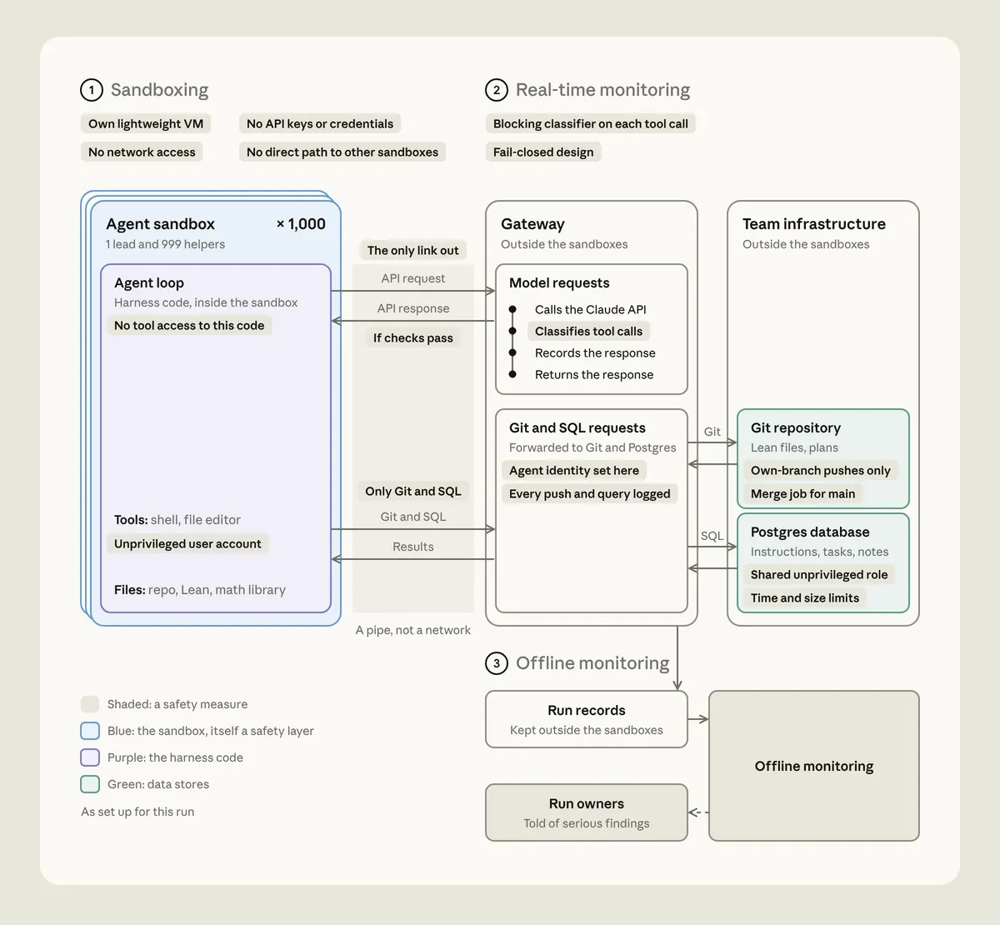

千體 agent：拿掉鷹架與指揮，28.7 小時重現費馬證明
導讀原文：〈Safely scaling multi-agent teams with Claude Fable 5.2〉——模型廠商自家實驗報告（claude.dev 部落格），作者自稱 toy experiment
這次抽掉的正是上次的兩根拐杖：形式化平台 Prove2Me，以及研究員的方向指導。
今年 9 月，Anthropic 用數十個 agent 完成費馬最後定理的第一個端到端形式化。
那次跑的是約當 Fable 5.1 的內部研究模型，靠 Prove2Me 平台與一位研究員在旁指路。
新實驗把兩根拐杖都抽掉，只給 60 條陳述、一句古典路線的摘要、相關定義，以及 47 個先前證好的引理。
然後指派 lead 與 helper 角色，其餘怎麼分工、怎麼證明、怎麼驗證，全由 agent 自己決定。
原文作者自己叫它玩具實驗（toy experiment），這個定調對閱讀很重要。

協調靠五張表，不靠開會
開工前 10 分鐘，lead 在共用資料庫建了五張表：Announce（公告）、Assign（派工）、Notes（筆記）、Subtasks（子任務）、Landed（完成）。
helper 從任務表認領工作，先搶先贏；完成的記進 Landed，其他人再自行認領新任務。
沒有中央排程器，也沒有 agent 之間的即時對話；協調全靠「讀表—認領—寫回」這套極簡約定。
lead 的工作是拆任務與派工；這也是 999 個 helper 能平行跑的前提。
安全設計也同樣克制：每個 agent 一個沙箱，無網路、無 API key、無憑證，也碰不到 harness 程式碼。
對外只有一條路：所有工具呼叫都經過閘道的阻擋式分類器，設計上是「查不到就擋」。
Git 只准推自己的分支，main 由 merge job 處理；資料庫用共用非特權角色，且有時間與大小限制。
| 條件 | 9 月版 | 這次（toy experiment） |
|---|---|---|
| agent 數量 | 數十個 | 1,000 個 |
| 外部鷹架 | Prove2Me 平台 | 無 |
| 人類指導 | 研究員帶方向 | 無 |
| 輸出 token | 基準 | 約三分之一 |
| 證明長度 | 基準 | 約七分之一 |
更短不代表更好讀。原文沒說這份證明是否更接近人類可讀的寫法，只給了相對倍數。
也別忘了 1,000 個 agent 的執行成本：每個 agent 一個輕量 VM，跑滿 28.7 小時。
該怎麼讀這個結果
作者自稱玩具實驗：單一題目、非標準 benchmark，也沒有與人類團隊或其他方法的效能對照。
「重現」也意味著目標已知、路線有摘要可循，不是從零找到證明。
可轉移的訊息因此偏往工程面：怎麼給一千個 agent 一個能協作又不會失控的外殼（harness）。
沙箱無網路、每次工具呼叫都過分類器、行為另有離線監控——三層各管一種風險。
離線監控特別值得學：run record 存在沙箱外，發現嚴重問題時回頭通知該次 run 的負責人。
原文自稱 toy experiment；此外它未給重跑次數與成功率，也未與人類團隊比較（本站補充）。
讀這類報告時，把「作者自己標的限制」放在數字旁邊，比記住 28.7 小時有用。
（編輯觀點：這篇的價值在「規模化多 agent 的護欄長怎樣」，不在「AI 會證數學」。）
帶走三件事
多 agent 的瓶頸是協調，不是智力。五張表就夠一千個 agent 不撞車。
拿掉鷹架才是真進展。同樣的題目，靠模型自己組織流程。
先想護欄再想規模。沙箱＋分類器＋離線監控，缺一不可。
導讀為本站編輯內容（AI 摘解自原文與館藏重點，非官方文件）；時長與倍數皆為 Anthropic 自報的單次玩具實驗，無第三方驗證。內容經對照原文的獨立事實審查後發布。